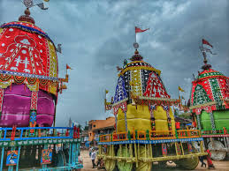
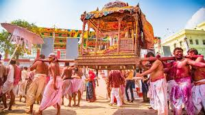
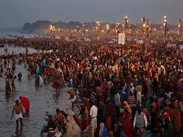
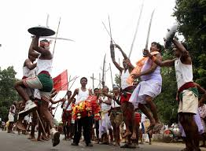
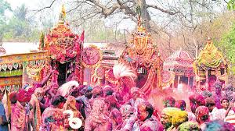
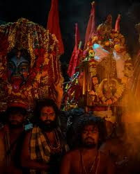
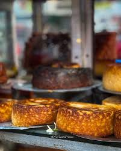
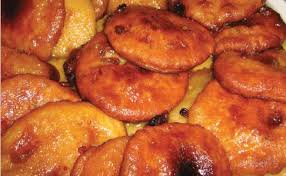
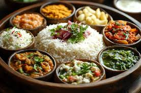

Explore Culture
The culture of Nayagarh is a blend of traditional Odia customs and local practices. Festivals like Dola Purnima and Ratha Yatra are celebrated with great enthusiasm. The local cuisine and folk dances like Pala and Daskathia are an integral part of life here.



Nayagarh's culture is characterized by traditional festivals like Pana Sankranti and Magha Saptami, rich folk dances including Danda Nrutya and Dholamahuri, local crafts such as brassware from Kantilo, historic temples like Nilamadhaba Temple and the Jagannath Temple at Nayagarh, and famous local foods like the sweet Chenapoda. The region also boasts significant historical architecture, including princely forts and ancient sites with inscriptions, alongside the traditional hospitality of the Odia people.
Festivals: Nayagarh celebrates numerous religious and cultural festivals throughout the year, such as Pana Sankranti, Shivaratri, and Magha Saptami.
Folk Dances: The district has a vibrant tradition of folk dances, including Paika Akhada, Danda Nrutya, and Dholamahuri, which are performed during local events.




Local Cuisine: The area is known for Chenapoda, a famous Odia sweet that originated in Nayagarh.


